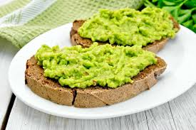

Home
Como hacer pan con aguacate

The pan con aguacate is a very easy dish to make. A great breakfast, light lunch or even light dinner.
The pan con aguacate combines the slightly sweet taste of bread with the comfortably salty taste
of the avocado, making it a perfect simple snack.
Ingredients:
Optional ingredients:
Steps to make:
Toast the bread
Cut the avocado in half
For the first half of the avocado, cut it in slices
Take the peel off the slices
Put the slices on a bowl and mash them together until they're a paste
Put the paste on the bread
Take the other half of the avocado and cut it in slices
Peel the slices, and serve them on top of the paste on the bread
Salt and pepper at your leisure
Enjoy